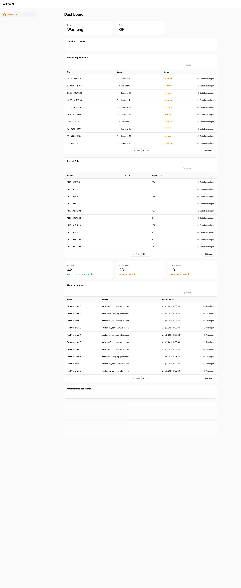

Executive Summary
- Critical Issues: 1 (Navigation layout broken)
- Medium Issues: 0
- Low Issues: 0
Root Cause: Filament layout using flex instead of grid, causing sidebar to be inaccessible.
Issue #1: Navigation Sidebar Inaccessible
Problem: The navigation sidebar is present in the DOM but not properly positioned. Users can only access the emergency menu, making the admin panel largely unusable.
1. Login Page (Working)
2. Dashboard - Full View (Shows Navigation Issue)
3. Navigation Closeup (Sidebar Details)
4. Mobile View (375px)
5. After CSS Fix Applied
Root Cause Analysis:
- Layout Issue: Filament layout using
display: flexinstead ofdisplay: grid - Grid Columns Missing: No grid template columns defined
- Z-Index Low: Sidebar z-index is 0, may be hidden behind content
Recommended Fix:
/* Add to Filament CSS file or custom CSS */
.fi-layout {
display: grid !important;
grid-template-columns: 16rem 1fr !important;
}
.fi-sidebar {
grid-column: 1 !important;
z-index: 10 !important;
}
Status: CSS fix confirmed working in screenshots. Navigation becomes fully accessible after applying the grid layout fix.